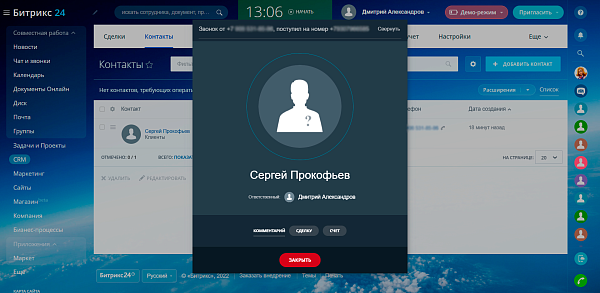
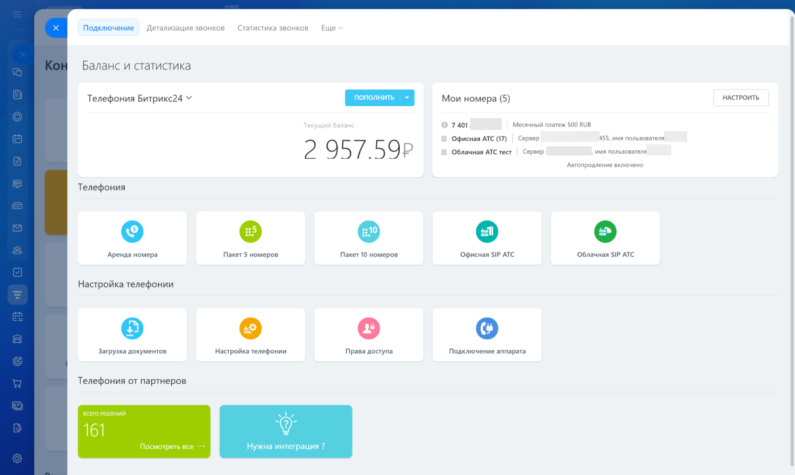
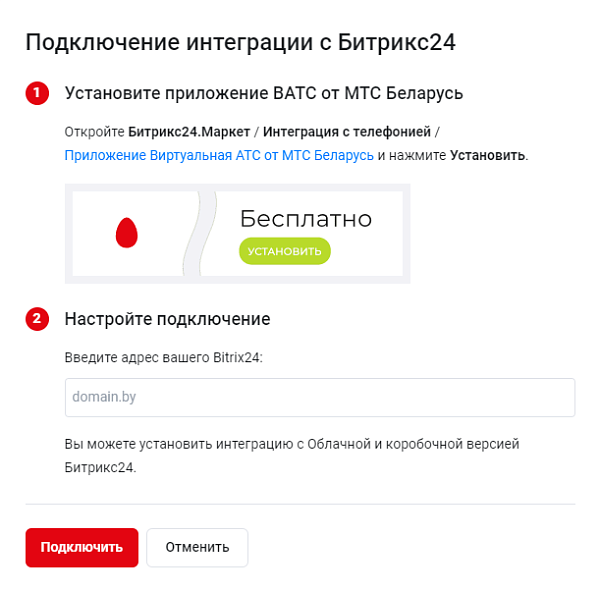
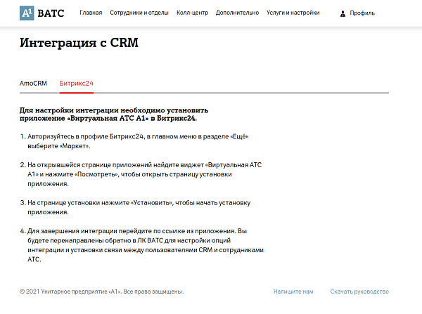
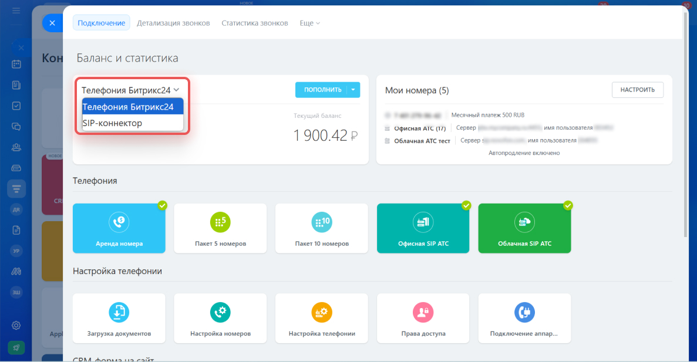

Интеграция телефонии с Битрикс24: виртуальная АТС или своя станция
Пока телефония не связана с CRM, звонок — это просто звонок: поговорили и положили трубку. Кто звонил, о чём договорились, перезвонили ли клиенту через неделю — Битрикс24 об этом не знает. Стоит подключить телефонию к CRM, и картина меняется: система сама показывает карточку звонящего, сохраняет запись разговора там же, где вся история клиента, и не даёт забыть о пропущенном вызове. Разбираем, какими способами это делают в Беларуси — через облачную виртуальную АТС оператора или через собственную станцию на Asterisk или Yeastar.
Что меняется, когда звонки становятся частью CRM
Без интеграции телефония и CRM живут отдельно друг от друга. Менеджер видит на аппарате или в мобильном приложении незнакомый номер, поднимает трубку, разговаривает — а потом должен сам вспомнить, что нужно зайти в Битрикс24 и создать карточку, если это новый клиент, или найти существующую и вручную записать, о чём договорились. Если не успел или забыл — информация осталась только в голове менеджера. Запись разговора, если она вообще велась, лежит отдельно на сервере АТС и с карточкой клиента никак не связана.
После интеграции этот процесс автоматический. Входящий звонок сразу поднимает карточку клиента — на экране всплывает имя, ответственный менеджер, история предыдущих обращений. Если звонит новый номер, Битрикс24 может сам создать лид или сделку. Запись разговора прикрепляется прямо к карточке — ничего не нужно искать отдельно. Пропущенный звонок не теряется: по нему автоматически ставится задача перезвонить. А в конце месяца руководитель видит не ощущения, а цифры: сколько звонков приняли, сколько пропустили, сколько длился разговор у каждого сотрудника.

 Карточка клиента всплывает сама — не нужно искать её вручную во время разговора
Карточка клиента всплывает сама — не нужно искать её вручную во время разговора- Запись разговора сохраняется прямо в карточке сделки или лида
- Новый номер может автоматически превращаться в лид или сделку
- Звонок можно совершить прямо из карточки клиента одним кликом по номеру
- Пропущенные звонки не теряются — по ним ставится задача на перезвон
- Появляется реальная статистика: количество, длительность и результат звонков по каждому сотруднику
В Битрикс24 три способа подключения телефонии, но выбор — по сути, из двух путей
Официальная справка Битрикс24 выделяет три технических способа подключить звонки: арендовать номер у партнёра платформы, подключить свою АТС через SIP-коннектор или установить готовое приложение конкретного оператора или станции из Маркета. Для аренды номера ничего своего не нужно — это отдельная история. А если у компании уже есть телефония, выбор сводится к двум стратегиям: подключить облачную виртуальную АТС оператора или связать с Битрикс24 собственную станцию.

Оба пути в итоге решают одну задачу — довести звонок и данные о нём до CRM, — но по-разному распределяют, что где хранится и кто за что отвечает. С облачной ВАТС оператор берёт на себя номера, серверы и связь, а компании остаётся только настроить сценарии и подключить приложение. Со своей станцией компания сама владеет оборудованием и получает больше гибкости, но и больше ответственности за его работу.
Почему в Беларуси выбор чаще падает на ВАТС локальных операторов
В странах, где рынок VoIP не регулируется так жёстко, компании выбирают между десятками облачных АТС и провайдеров SIP-трафика по всему миру — международные звонки маршрутизируются через того, у кого дешевле и удобнее. В Беларуси ситуация другая: с 2016 года действуют правила, по которым право предоставлять международную IP-телефонию закреплено за ограниченным числом операторов, а не за любым зарубежным VoIP-провайдером на выбор.
На практике это не мешает бизнесу пользоваться IP-телефонией и виртуальными АТС внутри страны — этот рынок вполне легален и развит. Но выбор для компании внутри Беларуси уже, чем «в других странах»: вместо подключения к произвольному зарубежному облачному провайдеру логичный и предсказуемый путь — виртуальная АТС от белорусского оператора связи, у которого уже есть номера, лицензия и договор с компанией на другие услуги. Поэтому виртуальные АТС от МТС и А1 в Беларуси — это не просто одно из многих предложений на рынке, а по сути стандартный путь для компании, у которой уже есть номера этих операторов и которая не хочет разбираться в тонкостях международного трафика.
Виртуальная АТС от МТС и А1 — заметно проще, чем разворачивать свою станцию
Мы не будем говорить, что это «в два клика» и «дёшево» — сначала всё равно нужно подключить услугу у оператора, установить приложение и настроить сценарии обработки звонков. Но по сравнению с собственной АТС это действительно понятный и предсказуемый путь: не нужно покупать и обслуживать оборудование, у оператора уже есть номера и лицензия, а интеграция с Битрикс24 оформлена в виде готового приложения из Маркета.

- Приложение в Битрикс24.Маркете от разработчика ITooLabs, бесплатное с оплатой звонков по тарифам МТС
- Звонок по клику, всплывающая карточка клиента, автосоздание лидов и сделок по новым номерам
- Запись разговоров с привязкой к карточке, аналитика по сотрудникам и отделам
- Одно из самых устанавливаемых приложений телефонии в белорусском Битрикс24.Маркете
- Исходящие звонки прямо из CRM, карточки при входящих вызовах, привязка сотрудников АТС к пользователям CRM
- Больше 100 функций телефонии на стороне самой АТС — очереди, голосовое меню, статистика

Как и с любым сторонним приложением, качество работы конкретной интеграции зависит от разработчика: у одних она отлажена стабильнее, у других случаются задержки и нужно точнее настраивать сценарии. Это ещё одна причина не относиться к подключению как к формальности — приложение нужно протестировать на реальных звонках, а не просто установить и понадеяться, что всё заработает само.
Собственная станция: Asterisk и Yeastar
Компании выбирают собственную АТС вместо облачной, когда хотят держать телефонию под своим контролем: сохранить существующие городские линии и GSM-шлюзы, не зависеть от тарифов и решений одного оператора, настроить нестандартную маршрутизацию звонков или просто масштабировать телефонию под большой штат так, как это удобно именно компании. Мы по телефонии в основном работаем с двумя платформами — Asterisk и станциями Yeastar.
Asterisk — открытое программное обеспечение для АТС: гибкое и бесплатное само по себе, но требующее сервера и грамотной настройки. Yeastar — готовые станции, физические или виртуальные, с собственной панелью администрирования, которая проще в освоении, чем голый Asterisk. Обе платформы умеют подключаться к Битрикс24 — сначала как SIP-АТС через встроенный SIP-коннектор, который отвечает за базовую маршрутизацию звонков в CRM и обратно.

Почему для Asterisk и Yeastar обычно ставят отдельный модуль интеграции
Встроенный SIP-коннектор решает базовую задачу — довести голос и команды звонка до Битрикс24 и обратно, — но он не заглядывает внутрь самой станции. А для полноценной автоматизации нужно как раз это: знать, какая очередь приняла звонок, на кого он в итоге переведён, где лежит файл записи, что происходит с параллельными вызовами.
Для этого и ставится отдельный модуль интеграции — программная прослойка между станцией и Битрикс24. Для Asterisk такие модули подключаются к серверу через Asterisk Manager Interface (AMI) и читают данные напрямую из базы станции; для Yeastar — через собственный API станции. Модуль уже умеет то, что не делает голый SIP-коннектор: автоматически создавать лид по звонку с незнакомого номера, распределять вызовы на ответственного менеджера, сохранять запись разговора в карточке, показывать всплывающую карточку клиента и фиксировать пропущенные звонки отдельной задачей.
Любой вариант — это не «настроил один раз и забыл»
И облачная ВАТС оператора, и собственная станция требуют настройки на старте и внимания дальше — разница только в том, что именно приходится настраивать и на чьей стороне лежит ответственность за это.
- Привязка сотрудников АТС к пользователям Битрикс24
- Маршрутизация и распределение звонков по отделам и ответственным
- Права доступа — кто может слушать записи и звонить из чужих сделок
- Сценарии для новых и повторных звонков — когда создавать лид, а когда искать существующую карточку
- Обновления приложения или модуля интеграции вслед за обновлениями Битрикс24
- Для своей станции — мониторинг сервера, бэкапы, обновления самого Asterisk или Yeastar
- Лицензия SIP-коннектора и оплата подключения — их нужно продлевать
- Качество связи — иногда сценарии приходится донастраивать по мере роста штата или изменения процессов
Что входит в подключение телефонии к Битрикс24
Аудит
Смотрим, какая телефония сейчас — оператор, номера, оборудование, — и как выстроена работа с входящими звонками.
Выбор пути
Помогаем выбрать между облачной ВАТС оператора и собственной станцией — исходя из задач, бюджета и уже имеющегося оборудования.
Подключение
Настраиваем SIP-коннектор или модуль интеграции, маршрутизацию звонков и права доступа сотрудников.
Проверка
Тестируем на реальных звонках: карточки клиентов, запись разговоров, создание лидов и сделок.
Обучение и сопровождение
Показываем сотрудникам карточку звонка в работе и остаёмся на связи, если что-то потребует донастройки.
Хотите, чтобы звонки не терялись в CRM?
Подберём вариант под вашу телефонию — виртуальную АТС оператора или собственную станцию на Asterisk или Yeastar — и настроим интеграцию с Битрикс24 от начала до тестовых звонков.